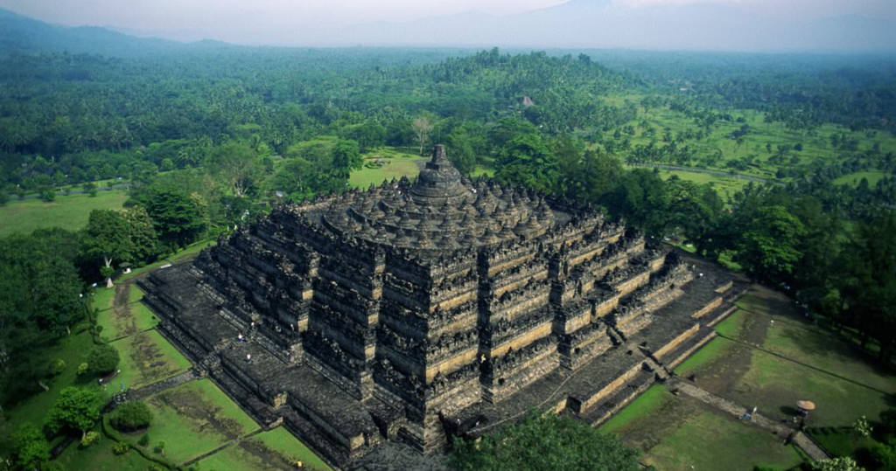
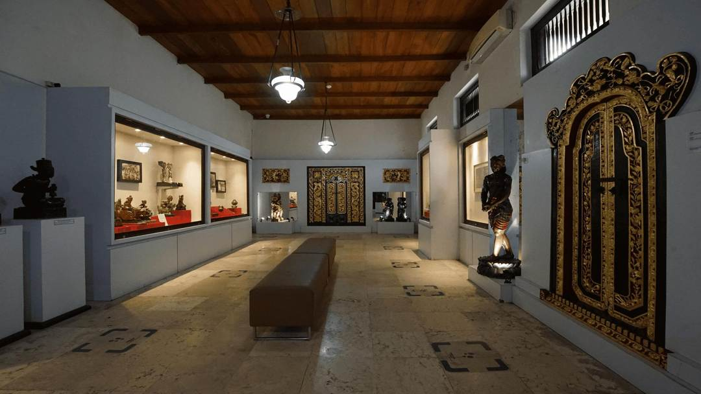

Bali
Budaya & Sejarah Bali.
Budaya & Sejarah Bandung.

Keraton Yogyakarta
Dibangun pada abad ke-18, Keraton Yogyakarta merupakan istana resmi Kesultanan Yogyakarta. Bangunan ini mencerminkan kemegahan arsitektur Jawa klasik dan masih menjadi pusat kebudayaan Jawa hingga kini. Pengunjung dapat melihat koleksi pusaka kerajaan, gamelan, hingga pertunjukan seni tradisional.
→ Rekomendasi: Ikuti tur berpemandu untuk memahami sejarah keraton, saksikan pertunjukan tari Jawa, dan kunjungi museum pusaka di dalam kompleks.
₊˚⊹⋆Click for the location

Taman Sari
Kompleks bekas taman kerajaan yang dulunya digunakan sebagai tempat peristirahatan dan pemandian para sultan serta keluarganya. Taman Sari memiliki kolam air, lorong bawah tanah, dan arsitektur yang memadukan gaya Jawa–Eropa, menjadikannya lokasi wisata sejarah yang unik dan fotogenik
→ Rekomendasi: Jelajahi lorong bawah tanah, berfoto di area kolam pemandian, dan dengarkan kisah sejarah Taman Sari dari pemandu lokal.
˚⊹⋆Click for the location

Candi Prambanan
Sebagai candi Hindu terbesar di Indonesia, Prambanan dibangun pada abad ke-9 dan dipersembahkan untuk Trimurti (Siwa, Wisnu, Brahma). Reliefnya yang indah menggambarkan kisah Ramayana dan menjadi bukti kemegahan peradaban Hindu di Jawa.
→ Rekomendasi: Jelajahi kompleks candi utama, saksikan Ramayana Ballet pada malam hari, dan nikmati pemandangan matahari terbenam di sekitar area candi.
˚⊹⋆ for the location

˚⊹⋆Click for the location
Candi Borobudur
Candi Buddha terbesar di dunia yang dibangun pada abad ke-8 ini memiliki lebih dari 2.600 relief dan 500 stupa Buddha. Selain sebagai tempat ibadah, Borobudur juga menjadi simbol kebijaksanaan dan kedamaian dalam ajaran Buddha.
→ Rekomendasi: Nikmati sunrise dari puncak candi, pelajari filosofi relief Buddha, dan kunjungi Museum Karmawibhangga di area sekitar.
˚⊹⋆Click for the location

˚⊹⋆Click for the location
Museum Sonobudoyo
Museum ini menampilkan koleksi lengkap peninggalan budaya Jawa, termasuk wayang, keris, batik, serta artefak arkeologis. Dikenal sebagai museum dengan koleksi terlengkap setelah Museum Nasional, tempat ini cocok untuk memahami warisan budaya Jawa.
→ Rekomendasi: Lihat koleksi senjata tradisional dan wayang, tonton pertunjukan wayang kulit malam hari, dan ikuti tur edukasi budaya.
˚⊹⋆Click for the location

Kotagede
Merupakan kawasan kota tua peninggalan Kerajaan Mataram Islam. Kotagede terkenal dengan kerajinan peraknya, arsitektur tradisional, dan gang-gang sempit yang bernuansa klasik. Tempat ini juga menyimpan makam raja-raja Mataram dan Masjid Agung Kotagede.
→ Rekomendasi: Jelajahi gang bersejarah, kunjungi pengrajin perak lokal, dan nikmati suasana klasik dengan berfoto di rumah-rumah tua Kotagede.
˚⊹⋆Click for the location